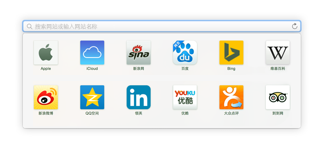
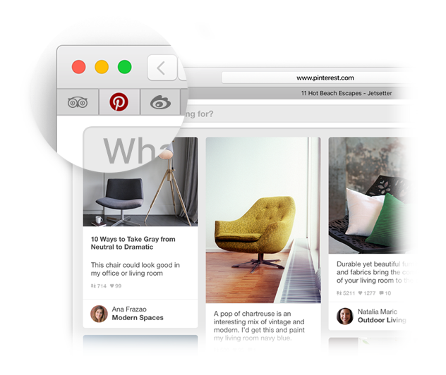
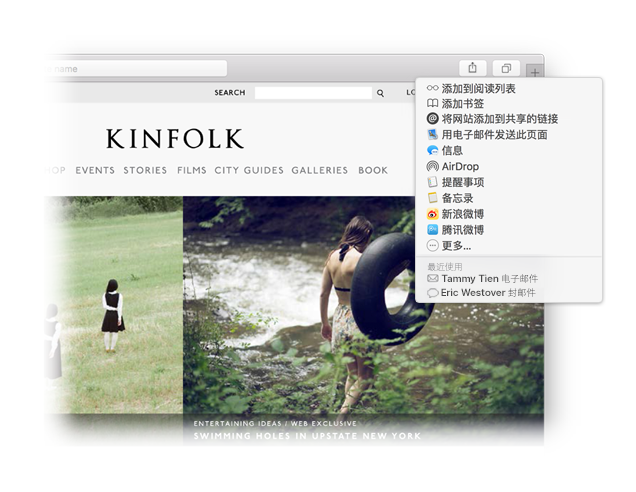
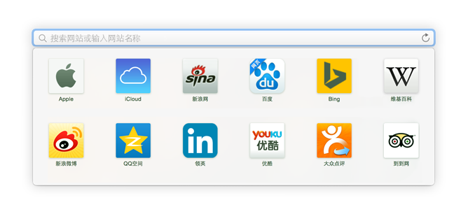
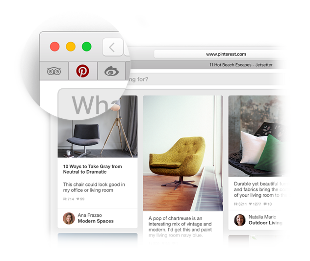
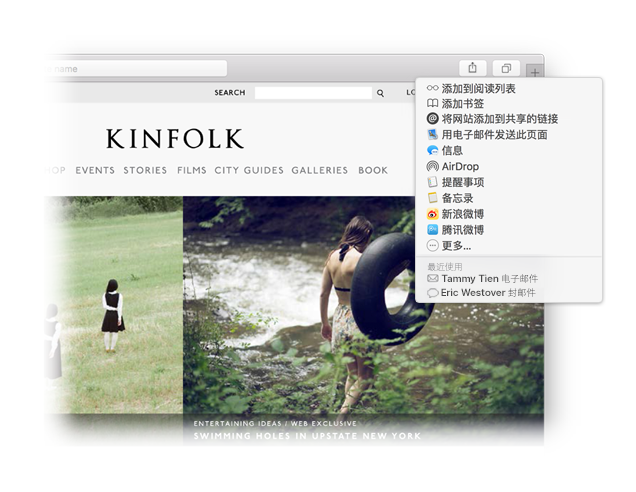

查找最爱。
点按“智能搜索”栏以访问您最喜爱的网站。点按某个站点来访问。

固定站点。
将标签页拖到左侧以固定一个站点，然后它会保留在标签页栏中。

共享链接。
点按  以电子邮件或文本信息发送链接，或者将其添加到“备忘录”。
以电子邮件或文本信息发送链接，或者将其添加到“备忘录”。
欢迎使用 Safari。
最智能的上网冲浪方式。

查找最爱。
点按“智能搜索”栏以访问您最喜爱的网站。点按某个站点来访问。

固定站点。
将标签页拖到左侧以固定一个站点，然后它会保留在标签页栏中。

共享链接。
点按  以电子邮件或文本信息发送链接，或者将其添加到“备忘录”。
以电子邮件或文本信息发送链接，或者将其添加到“备忘录”。